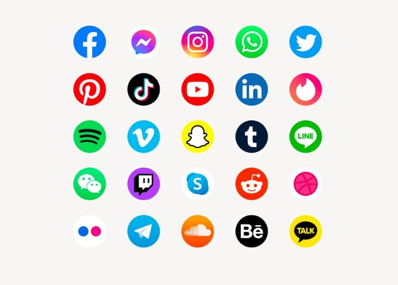

Les Réseaux Sociaux
En sciences humaines et sociales, l'expression réseau social désigne un agencement de liens entre des individus ou des organisations, constituant un groupement qui a un sens : la famille, les collègues, un groupe d'amis, une communauté, etc. Ainsi, au sens informatique, les réseaux sociaux sont des plateformes en ligne permettant aux utilisateurs de partager du contenu, d’interagir et de se connecter avec d’autres personnes ou communautés.
- 
-
Les réseaux sociaux sont des plateformes numériques interactives qui permettent aux utilisateurs de créer un profil, de partager divers types de contenus (textes, images, vidéos, liens) et d’interagir avec d’autres personnes ou communautés ayant des intérêts communs. Devenus omniprésents dans la vie quotidienne, ils facilitent la communication instantanée, l’élargissement des cercles sociaux et la diffusion rapide d’informations à l’échelle mondiale. Des plateformes comme Facebook, Instagram, X (anciennement Twitter), TikTok, LinkedIn ou Snapchat répondent à des usages variés, allant du loisir à la promotion professionnelle. Ils sont utilisés aussi bien dans un cadre personnel que pour des objectifs marketing, commerciaux ou de mise en réseau professionnelle. Toutefois, leur utilisation soulève plusieurs préoccupations, notamment en ce qui concerne la protection des données personnelles et la vie privée. La désinformation y circule facilement, et leur usage excessif peut entraîner une dépendance numérique, avec des effets négatifs sur la santé mentale et les relations sociales.